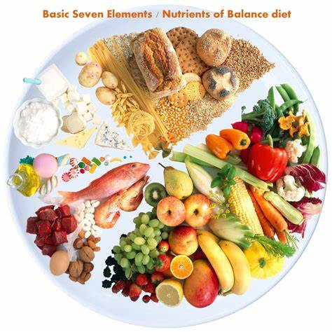

Health Benefits of a Balanced Diet
Eating a balanced diet is crucial for maintaining good health. It provides the body with essential nutrients, helps maintain a healthy weight, and reduces the risk of chronic diseases. Key components of a balanced diet include a variety of fruits and vegetables, lean proteins, whole grains, and healthy fats.
Key Components of a Balanced Diet
- Fruits and Vegetables: Rich in vitamins, minerals, and fiber.
- Lean Proteins: Essential for muscle repair and growth.
- Whole Grains: Provide sustained energy and fiber.
- Healthy Fats: Necessary for brain health and hormone production.
Benefits of a Balanced Diet
Following a balanced diet can lead to numerous health benefits including improved digestion, better mental health, increased energy levels, and reduced risk of chronic diseases such as heart disease, diabetes, and obesity.
"A healthy diet is not about strict limitations, but rather about making smarter choices for a healthier life." - Jane Doe